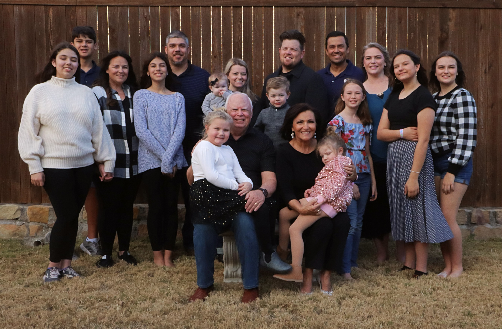

Welcome To Nana's Cooking!
Information about Nana:
Yollie Hogan is an amazing Mother, Nana, and woman. She loves all of her children dearly.
She immigrated from Mexico to the U.S. when she was 18 years old. She has been cooking from scratch for her kids and grandchildren. She is an amazing cook and loves to share her recipes with
her family. This website is dedicated to her and all of the amazing food she has made for us over the years.
